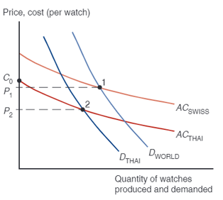

| production | consumption | production | consumption | Gains from trade | ||
|---|---|---|---|---|---|---|
| USA | textiles (ton) | 50 | 50 | 0 | 75.0 | +25 |
| USA | soybean (ton) | 50 | 50 | 100 | 62.5 | +12.5 |
| IDN | textiles (ton) | 100 | 100 | 200 | 125.0 | +25 |
| IDN | soybean (ton) | 25 | 25 | 0 | 37.5 | +12.5 |
Trade Theory
Imed Krisna Gupta
November 24, 2025
Profile
I Made Krisna Gupta (Imed)
Dewan Ekonomi Nasional, Universitas Indonesia, Center for Indonesian Policy Studies
S3 di Australian National University, S2 di UI/VU Amsterdam
Fokus riset di perdagangan internasional dan kebijakan publik (particularly kebijakan industri)
more at krisna.or.id atau @imedkrisna
hari ini
comparative advantage
GVC
Gains from trade
Case for intervention
Why nations trade
You might have seen the news about what Indonesia trades with the world:
We imports many food stuff: beef, rice, wheat, soybeans
We also export many plantation and natural resources such as CPO and coal.
But you might also hear that trade is like a competition: export is good, import is bad, and trade deficit means a country is “lost”.
Truthfully, it’s much more complex than that.
Generally, economists believe that international trade is better for both parties.
Concepts
Concepts in trade is straightforward:
Differences across countries are a key reason why trade occurs.
Economies of scale can also be a strong reason.
Opportunity cost is the root of comparative advantage concept which is the core of all trade model.
Absolute Advantage
Don’t confuse absolute adavantage vs comparative advantage.
A country \(j\) has an absolute advantage in producing good \(i\) if country \(j\) requires lower amount of resources in producing good \(i\) comparaed to other countries.
It is about actual cost. Trade is determined by comparative advantage however, and it means a country can still trade even if the country is absolutely good in making everything.
Comparative Advantage
The opportunity cost of producing something measures the cost of not being able to produce something else with the resources used.
Comparative advantage will be determined by comparing opportunity costs across countries.
A country \(j\) has a comparative advantage in producing good \(i\) if the opportunity cost of producing good \(i\) is lower in the country \(j\) than in other countries.
One factor economy
- Labor is the only factor of production.
- Labor productivity varies across countries due to differences in technology, but labor productivity in each country is constant.
- The supply of labor in each country is fixed.
- Two goods: food and cloth.
- Competition allows workers to be paid a wage equal to the value of what they produce, and allows them to work in the industry that pays the higher wage.
- Two countries: home and foreign.
One factor economy
Labor supply \(L\) is the total labor resources a country has.
\(a_{LF}\) indicates the amount of labor required to produced 1 kg of Food.
Food production \(Q_F\)=total food produced by the home country.
Production possibility frontier (PPF): the maximum amount of production given resources.
\[ a_{LF}Q_F+a_{LC}Q_C\leq L \]
PPF
\[ a_{LF}Q_F+a_{LC}Q_C\leq L \]
If \(Q_C\)=0, maximum food production is \(Q_F=\frac{L}{a_{LF}}\)
If \(Q_F\)=0, maximum cloth production is \(Q_C=\frac{L}{a_{LC}}\)
PPF ex.
- Say home country have this spec:
\[ Q_F+4Q_C \leq 200 \]
How many labor needed to make 1 cloth? How many 1 food?
Max possible food is 200 kg, max possible cloth is 50 metre.
Home PPF
The production function has a linear PPF.
Home can produce anywhere on the line.
below the line \(\rightarrow\) inefficient
above the line \(\rightarrow\) unfeasible
As you move along the line, you increase a production of 1 good while decreasing another.
- the opportunity cost of making a good is the other good!

Opportunity cost
- The opportunity cost of making food is how many meter of cloth Home must stop producing in order to produce 1 kg of food:
\[ \frac{a_{LF}}{a_{LC}} \]
the opportunity cost is constant because the unit labor requirements are both constant.
the opportunity cost of food appears as the absolute value of the slope of the PPF
opportunity cost
For the case of \(Q_F+4Q_C \leq 200\):
to increase 1 kg of food, we need 1 hour of labor. But 1 hour of labor equals to 0.25 m of cloth (because we need 4 hours of labor to make 1 m of cloth).
Likewise, to have 1m more of cloth, we need 4 hour of labor, which could produce 4 kg of food instead.
| to produce | opportunity cost |
|---|---|
| 1 kg of food | 1/4 m of cloth |
| 1 m of cloth | 4 kg of food |
Foreign
Suppose we have a foreign country with this spec:
\[ 2Q_F+2Q_C \leq 200 \]
What can you tell me about this country?

2 countries in autarky
- Suppose the two countries does not trade. Indonesia’s production is (100,50), While in the US, it’s (50,50).
| Produce | US opportunity cost | IDN opportunity cost |
|---|---|---|
| 1 ton of textiles | 1 ton of soybean | 250 kg of soybean |
| 1 ton of soybean | 1 ton of textiles | 4 ton of soybean |
- Indonesia is comparatively better at making textiles, while US is better at producing soybean:
- To make 1 ton of textiles, US needs to gave up resources which can be used to make 1 ton soybean, while Indonesians need only to give up 250 kg soybean.
- To make 1 ton of soybean, US needs to gave up resources which can be used to make 1 ton textiles, while Indonesians need only to give up 4 ton of textiles.

Gains from trade
By concentrating production on one good and then trade, you can see that both ended up better-off:
with autarky, total production {textiles,soybean} \(=\{150,75\}\)
consumption=production, and \(C_{USA} = \{50,50\},C_{IDN} = \{100,25\}\)
Gains from trade
in autarky
|
with trade
|
|||||
|---|---|---|---|---|---|---|
| production | consumption | production | consumption | Gains from trade | ||
| USA | textiles (ton) | 50 | 50 | 0 | 75.0 | +25 |
| USA | soybean (ton) | 50 | 50 | 100 | 62.5 | +12.5 |
| IDN | textiles (ton) | 100 | 100 | 200 | 125.0 | +25 |
| IDN | soybean (ton) | 25 | 25 | 0 | 37.5 | +12.5 |
with trade, total production {textiles,soybean} \(=\{200,100\}\)
- Production \(\Rightarrow P_{USA}=\{0,100\}, P_{IDN}=\{200,0\}\)
- Consumption \(\Rightarrow C_{USA}=\{75,62.5\}, C_{IDN}=\{125,37.5\}\)
Tweaking a bit
- Results is consistent if
Comparative advantage
In reality, we will need country’s preferences to establish proper equilibrium quantity and prices.
In this model, we have no price. But from the opportunity cost, we can calculate the relative prices:
- In the US, opportunity cost to produce 1 soybean is 1 textile. That means, \(P^{soybean}_{USA} = P^{textile}_{USA}\)
- In Indonesia, opportunity cost to make 1 soybean is 4 textiles. That means, the price of soybean must be four times price of textile.
Since in Indonesia, it is comparatively cheaper to produce textile, it’s better for US to source its textile from Indonesia.
What determines comparative advantage?
Differences in climate is the reason why we’re so good at producing CPO and rubber, but sucks at producing soybean and wheat.
Differences in Factor Endowment. Some countries are endowed with natural resource, some with cheap labour. Countries which has no both has to find something else, such as:
Differences in technology. Japan, South Korea and Taiwan are one good example. While technology can be transferred, opportunity cost of investing in high-tech things is more production of CPOs.
Indonesian soybean market in autarky

Indonesian soybean market with trade

With trade, the soybean market is exposed to a lower world price \(P_W\)
at \(P_W\), demand increases \(Q_A \rightarrow Q_D\), while supply reduces \(Q_A \rightarrow Q_S\)
This imbalance is solved via imports. Domestically produced soybean is \(Q_S\), while imported soybean is \(Q_D-Q_S\)
Change in surplus

In autarky:
- PS = Y + X
- CS = W
- TS = Y + X + W
In trade:
- PS = Y
- CS = W + X + Z
- TS = Y + W + X + Z
CS is much higher, and trade gains area Z in total.
However, domestic soybean producer lose area X.
US soybean market with trade

With trade, the soybean market is exposed to a higher world price \(P_W\)
at \(P_W\), demand reduces \(Q_A \rightarrow Q_D\), while supply increases \(Q_A \rightarrow Q_S\)
This imbalance is solved via exports. Domestically consumed soybean is \(Q_D\), while imported soybean is \(Q_S-Q_D\)
Change in surplus

In autarky:
- PS = Y
- CS = W + X
- TS = Y + X + W
In trade:
- PS = Y + X + Z
- CS = W
- TS = Y + W + X + Z
PS is much higher, and trade gains area Z in total which goes to producer.
However, domestic soybean producer lose area X.
Effect of trade
Trade benefits exporting industries while hurting import competing industries.
Factor of productions used for export sectors will have high demand, and priced highly:
- Firms in natural resources exporting countries will compete to gain access to lands
- Farmers move to manufacturing because Indonesia export a bit of manufactures, while net importing agricultural goods.
If factors can’t easily move, it will leads to inequality.
Trade policy
- Trade leads to winner and losers:
- import benefits consumers while hurt producers
- export benefits producers while hurt consumers
- In the case of soybean:
- import helps chicken breeders who benefit from cheap soybean, but hurt soybean farmers.
- If soybean farmers are more politically influencial, they can ask for protection from the government by using import tariff or import quota.
Recall soybean import

The effect of import tariff

When the government impose tariff, the import price become more expensive. Local producer doesn’t experience tariff so they become more competitive.
Domestic parket becomes world price + tariff
This push demand down to \(Q_{DT}\) and increase domestic supply to \(Q_{ST}\)
Imports are lower \(Q_{DT}-Q_{ST}\)
The effect of import quota

When the government impose quota restriction at \(Q_{DT}\), the effect is similar.
buyers want to buy up to \(Q_D\) but cannot.
This push price up to \(P_T\).
Surplus changes from trade policy

Tariff leads to lower imports, and more domestically produced goods.
In total, CS lost A+B+C+D
PS gains = A
Government gets tariff revenue, which is number of imports \(\times\) per-unit tariff, which is C
B+D is DWL.
Effect of trade policy
in case of quota, B goes to quota rent.
When quota rent is sold with a competitive auction, the rent can go to government, and thus have the same effect as tariff.
However, when appointed quota is not transparent this can lead to a corruption.
Conclusion
In conclusion, trade is generally good for everyone
Unfortunately, the gain from trade is not shared equally, and could potentially lead to higher inequality.
- Donald Trump rust belt
- Indonesian manufacturing suffer from commodity boom during the 2000s.
Trade creates winners and losers, and the battle between winners and losers determine trade policy.
Global Value Chain
These days, trade have been moving to an even more extreme point. Hence hyperglobalization: countries rely on each other to produce one particular goods.
The main enabler is advances in communications:
- human-human: the internet.
- human-machine: production software, production dashboard.
- machine-machine: CAD-CAM.
Countries able to specialize not only in a production of particular goods, but a particular process of production.
This is called Global Value Chain (GVC)
Many products these days do not made by just 1 country

image
source: World Bank
Global Value Chain
Many products these days do not made by just 1 country

image
Global Value Chain
GVC allows for a country that has very low technological prowess become one of the dominant exporter of high-tech goods like smartphone and laptops.
In GVC situation, trade policy becomes very important: a poorly designed trade policy will leads to zero production in both.
Imagine if Indonesia has to build its own semiconductor fab in order to produce a smartphone.
- With GVC, Indonesia can import semiconductor and assemble a PCB and smartphone domestically.
Indonesia also able to export textiles in varying qualities of raw materials.
Intro

Offshoring
The provision of a service or the production of various parts of a good in different countries that are then used or assembled into a final good in another location is called foreign outsourcing.
- sometimes called offshoring.
Offshoring is a typoe of international trade that differs from the type we see in Ricardian and H-O models where goods traded are final goods.
Offshoring is trade in intermediate inputs, which can sometimes crosses several borders before turned into a final good.
Offshoring
At its core, offshoring has the same reasoning as our standard trade model:
- A firm in a country is better of sourcing part of their production in countries with comparative advantage in that good.
In essence, offshoring breaks down a final good into several intermediate goods (and services).
- these goods embed different factor intensities.
Unbundling
To understand offshoring better, we utilise the theory of product unbundling, coined by Richard Baldwin.
So far, our model assume a trivial trade cost. which is of course far from true in the real world.
However, trade cost is indeed dropping in various speed.
Decreasing cost of trade is what causes economic undbundling.
Cost of trade
trade cost / cost of moving goods leads to the first unbundling.
communivation costs / cost of moving ideas leads to the second unbundling
Face-to-face costs / cost of moving people leads to the third unbundling.
First unbundling
Happened in around 1820, the brittain industrial revolution
- aka the steam revolution -> steam ship, steam rail, containerization, telegram/telephone.
Also the Pax Brittanica, a relatively peace time after Napoleonic war.
Characterized by low trade cost, but high communication costs and face-to-face costs.
First unbundling
also called old globalization.
With high trade cost, all countries must produce their own goods and services because moving goods are expensive.
The first unbundling is basically unbundle production and consumption: various goods can be produced abroad.
Production clustered locally (to reduce communcation costs), but market are global (goods can be moved to different countries relatively cheaply)
- also, remember internal economies of scale?
Old globalization
High communication costs meant Northern (aka rich countries) innovation stayed in the north.
There is a knowhow imbalance, where all the knowledge is accumulated in the place of productions (remember external economies of scale?)
Second unbundling
Happened after 1990 thanks to ICT revolution (basically the internet).
Characterized by low cost of trade and communication cost, but still high face-to-face costs.
Now firms can organize production easily. Location of ideas can be different from the manufacturing.
2nd unbundling: unbundling process of production / production value chain.
Second unbundling
The second unbundling creates hyperglobalization, where globalization happens on the process of production.
- This is offshoring. Also called the global value chain (GVC) phenomenon.
To ensure offshored production meshed seamlessly, G7 firms offshored knowhow with the jobs.
This creates a comparative advantage, hence trade opportunities from high-tech value chain and low-wage one.
With lower value outsourced (hence gets cheaper with lower wage), the trade cost become worth it.
Modeling the offshoring
For any given final product, we unbundle its process of production. We first list these process from start to finish.
For example, to make an aeroplane, you need to start with research and development (R&D), produce components, assemble them, and then do marketing and sales as well as customer service.
We then rearrange the list in terms of value: from lower value to higher value.
- e.g., start with assembly, end with R&D.
Modeling the offshoring

Offshoring model
panel (a) is the unbundle list based on production process, while panel (b) is the rearranging from lower value to higher value.
In the panel (b), there exists a point A where we can slice/unbundle the production process: a low-value process (left of A), and a high-value process (right of A).
Suppose Home country is a high-tech country, then it’s better for home to outsource the left bundle abroad.
Offshoring model
Think of a HO model, but instead of having a labor/capital ratio, we have high skilled/low skilled labor \(\frac{H}{L}\).
Let G7 countries represented by a region called Home, while China is foreign. We assume that
\[ \frac{H}{L} > \frac{H^*}{L^*} \]
Offshoring model
- Goes without saying that wage of high-skilled labor relative to low-skilled labor is lower in Home
\[ \frac{W_H}{W_L}<\frac{W_H^*}{W_L^*} \]
Meaning, Home has comparative advantage in producing high value production which use high-skilled labor intensively.
Of course foreign thus have comparative advantage in producing lower value production, which Home country offshore.
Offshoring
This is the second unbundling: we unbundle process of production into two: high-value bundle and low-value bundle.
Two countries with different labor profile then trade these bundles.
Just like Standard Trade Model (STM), we can model this with a relative wage vs relative labor demand graph.
Offshoring

Relative labor market
High-skilled labor relative to low-skilled ones are abundant at Home, thus \(\frac{W_H}{W_L}\) equilibrium is low.
\(\frac{W_H}{W_L}<\frac{W_H^*}{W_L^*}\), thus this create an arbirtage.
Just like H-O model, trade would benefits H in Home and L* in foreign, while L and H* suffers.
Lower trade cost
An even lower trade cost may reduce operating cost at Foreign.
This means, offshoring become even cheaper: Home may increase its offshoring, moving more process of production abroad.
If this happens, demand for L goes down (because more low-skilled jobs are offshored), thus \(\frac{H}{L} \uparrow\)
Foreign gets more job, thus \(\frac{H*}{L*} \downarrow\)
Lower trade cost

Lower trade cost

Second unbundling
The new ‘hi-tech-low-wage’ mix shifted manufacturing & knowhow massively to a handful of developing nations.
The result is the great convergence between 1990-2014:
Developed countries are catching up, enlarging their pie share in the global GDP.
While G7 economies relatively reduced in the global GDP share.
Consequences
New globalization (aka the second undbundling) breaks monopoly that G7 labour had on G7 knowhow. Now G7 firms can pick other labor in other countries basically.
New globalization affects economies with finer resolution: it used to be that countries compete on the final product level, now on the manufacturing stage and job level.
Impact of the new globalization is now more sudden, individual, unpredictable and uncontrollable.
Consequences
production that used to be happened all in one country is now become an international trade.
Trade policy affects not just final product, but also granularry
Predictable trade policy become even more important because changes in one chain of value affects the overall production.
National competitiveness is now become regional competitiveness.
Consequences
Developing countries now don’t have to start to build final good from the ground-up. They can join the value chain / production network.
Vietnam is one of the largest smartphone exporter. It does not have to know how to make the whole smartphone, but starting from the assembly.
China also started with assembly and then become more upstream
G7 competitiveness now relies on offshoring. Cannot compete without one.
The third unbundling
Third unbundling is a relatively new phenomenon: happens when face-to-face cost reduce.
The industry 4.0: face-to-face cost reduces thanks to telepresence and telerobotics. Data transfer, human-machine and machine-machine interface allows it to happen.
Telerobotics: example, a doctor can provide his/her service through robots, lecturers can do zoom class, etc.
It remains to be seen its consequences.
Rebundling?
De-globalization phenomena may moves us back a little bit, where countries are on the move to re-introduce measures which increase trade costs (tariffs, non-tariffs, WTO dead).
Will unbundled production be re-bundle?
Case for intervention
Development in Indonesia

Development in Indonesia

External economies theory
Production becomes efficient when it is concentrated in one of few locations (aka the agglomeration effect)
In the United States, the semiconductor industry is concentrated in Silicon Valley, investment banking in New York, and the entertainment industry in Hollywood.
One town in China produces most of the world’s underwear production, another produces nearly all cigarette lighters.
Indian information services companies are still clustered in Bangalore.
Why agglomeration?
- Specialized equipment or services may be needed for the industry, but are only supplied by other firms if the industry is large and concentrated.
For example, Silicon Valley in California has a large concentration of silicon chip companies, which are serviced by companies that make special machines for manufacturing silicon chips.
These machines are cheaper and more easily available there than elsewhere.
Why agglomeration?
Labor pooling: a large and concentrated industry may attract a pool of workers, reducing employee search and hiring costs for each firm.
Knowledge spillovers: workers from different firms may more easily share ideas that benefit each firm when a large and concentrated industry exists.
Equilibrium

unlike perfect market, external economies of scale leads to a downward sloping AC.
However, competition is still fierce -> AC curve become forward-falling supply curve.
The equilibrium is at point 1.
This point different between countries: depends on initial condition of supply and demand, also depends on comparative advantage.
External economies and trade
Suppose US vs China where the \(P_CHINA<P_US\) before trade. When they trade, the two countries suddenly joined their demand. For consumers, it is cheaper to source all Button from China.

External economies and trade
The Chinese button industry will expand, while the U.S. button industry will contract.
This process feeds on itself: As the Chinese industry’s output rises, its costs will fall further; as the U.S. industry’s output falls, its costs will rise.
In the end, all button production will be in China.
External economies and trade
How does this concentration of production affect prices?
Chinese button prices were lower than U.S. button prices before trade.
Because China’s supply curve is forward-falling, increased production as a result of trade leads to a button price that is lower than the price before trade.
Trade leads to prices that are lower than the prices in either country before trade!
External economies and trade
This is very different from the implications of models without increasing returns.
In the standard trade model, relative prices converge as a result of trade.
If cloth is relatively cheap in the home country and relatively expensive in the foreign country before trade opens, the effect of trade was to raise cloth prices in Home and reduce them in Foreign.
With external economies, by contrast, the effect of trade is to reduce prices everywhere.
External economies and trade
What might cause one country to have an initial advantage from having a lower price?
One possibility is comparative advantage due to underlying differences in technology and resources.
If external economies exist, however, the pattern of trade could be due to historical accidents:
Countries that start as large producers in certain industries tend to remain large producers even if another country could potentially produce more cheaply.
External economies and trade
A tufted blanket, crafted as a wedding gift by a 19th-century teenager, gave rise to the cluster of carpet manufacturers around Dalton, Georgia.
Silicon Valley may owe its existence to two Stanford graduates named Hewlett and Packard who started a business in a garage there.
Legend has it, Kudus become The Kretek City was credited to Haji Djamhari and Nitisemito.
External economies and trade
Assume that the Vietnamese cost curve lies below the Chinese curve because Vietnamese wages are lower than Chinese wages.
At any given level of production, Vietnam could manufacture buttons more cheaply than China.
One might hope that this would always imply that Vietnam will in fact supply the world market.
But this need not always be the case if China has enough of a head start.
No guarantee that the right country will produce a good that is subject to external economies.
External econ & trade

Suppose Vietnam has even lower \(AC\) than China.Producing in Vietnam would placed world Q and P at point 2.
If the Chinese industry established first (Hence started at 1), while Vietnam hasn’t built its button industry, it starts at \(C_0\).
since \(C_0 > P_1\), no firms would even starting its company in Vietnam.
External econ & trade
Trade based on external economies has an ambiguous effect on national welfare.
There will be gains to the world economy by concentrating production of industries with external economies.
It’s possible that a country is worse off with trade than it would have been without trade: a country may be better off if it produces everything for its domestic market rather than pay for imports.
Worse with trade
Imagine that Thailand could make watches more cheaply, but Switzerland got there first.
The price of watches could be lower in Thailand with no trade.
Trade could make Thailand worse off, creating an incentive to protect its potential watch industry from foreign competition.
What if Thailand reverts to autarky?
Worse with trade

At first, TH import watch from SW at point 1. \(P_1\) is low enough to block entry.
However, if Thailand block import, its industry must produce, and the scale can go to point 2, where \(P_2<P_1\).
This situation provides a reason for a temporary protectionism.
External economies
Note that it’s still to the benefit of the world economy to take advantage of the gains from concentrating industries.
Each country wanting to reap the benefits of housing an industry with economies of scale creates trade conflicts.
Overall, it’s better for the world that each industry with external economies be concentrated somewhere.
Dynamic scale
So far, we have considered cases where external economies depend on the amount of current output at a point in time.
But external economies may also depend on the amount of cumulative output over time.
Dynamic increasing returns to scale exist if average costs fall as cumulative output over time rises.
Dynamic increasing returns to scale imply dynamic external economies of scale, which provide a case for protectionism.
Trade based on external economies of scale may increase or decrease national welfare, and countries may benefit from temporary protectionism if their industries exhibit external economies of scale either at a point in time or over time.
Miskonsepsi merkantilis
- Ingat persamaan PDB konsumsi:
\[ Y=C+I+G+(X-M) \]
menekan \(M\) = menurunkan \(C\), bukan menaikkan \(Y\).
Saving \(S=Y-C-G\), artinya \(S=I+(X-M)\)
Net ekspor \((X-M>0)\) sama saja dengan \(S>I\) alias net capital outflow.
Current Account
\(X>M=\) current account surplus, \(X<M=\) current account deficit.
CA dunia selalu balance: surplus di 1 negara akan dibarengi dengan defisit di setidaknya 1 negara.
Negara yang defisit berarti membeli barang tanpa membayar \(\rightarrow\) ngutang.
- Deficit CA \(\rightarrow\) net investment position minus.
Negara yang surplus berarti memberi barang tanpa dibayar \(\rightarrow\) piutang.
Case for trade policy
Normally, a country cannot sustain a trade surplus:
- constant surplus \(\Rightarrow\) XR appreciation.
Countries can force up its saving rate, reducing exchange rate by boosting M2 and buy foreign assets.
In this case, surplus can be sustained in a long period of time.
In the case of US, sustain a deficit by keep issuing dollar asset.